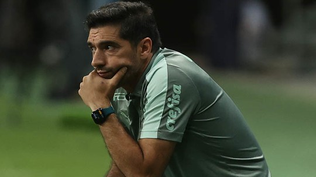
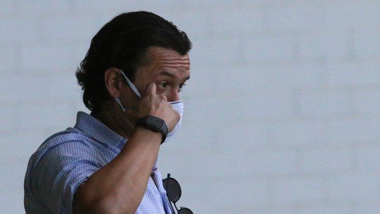
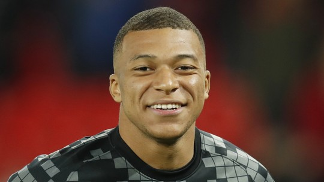
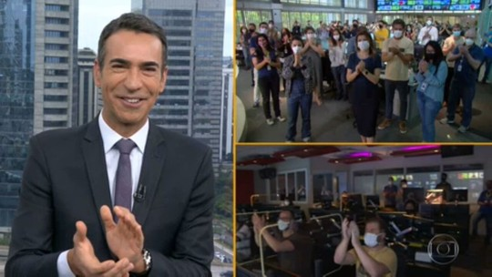
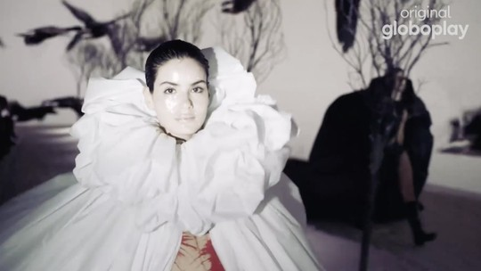
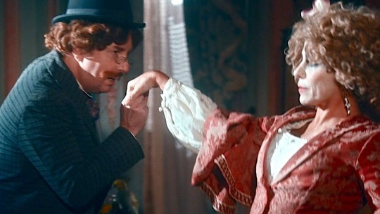

g1
o globo
valor
ge
cartola
globoplay
dropz
gshow
quem
receitas
Show do Blink-182 é eleito o melhor do Lollapaloza deste ano
Trio se apresentou pela primeira vez no Brasil na sexta-feira
Segundo enquete, Blink-182 foi eleito o melhor show com 48,81% dos votos
Lollapaloza virou lama
Vídeo viraliza com escorregões na lama que dominou evento
Durante os 3 dias de evento, público enfretou um lamaçal
Pegou fogo
Incêndio destrói prédio da antiga Bolsa de Valores
Incêndio destruiu antigo prédio da bolsa na Dinamarca
Lanche azedou
Controladora do Subway pede recuperação judicial
A soma das dívidas ultrapassa o valor de R$ 482 milhões
Fora de controle
Brasil chegou a registrar 50 mil casos de dengue em um dia
São mais de 2,3 milhôes de casos e mais de 800 mortes
O melhor do cinema
Acontece a 96ª edição da premiação do Oscar
Oppenheimer é o filme favorito em diversas categorias
Pulmão de ferro
Falece homem que viveu 70 anos em pulmão de ferro
Paul Alexandrer contraiu poliomelite aos 6 anos de idade

Espião estatístico
Classificação do returno tem Palmeiras em último; veja as posições
Crespo almoça com diretoria e deve se despedir no CT

Greve segue na Raposa
Cruzeiro não viabiliza recurso para quitar atradados

Campeonato francês
Desfalco, PSG recebe o Angers, 4º colocado

Férias e JH
César Tralli se emociona na despedida da SP1

Verdades Secretas 2
Angel cruza a passarela poderosa; reveja desfiles
Blanche terá dois relacionamentos
Gabriel viverá sadomasoquista

Nos Tempos do Imperador
Lota vai cair em golpe
Teresa toma decisão radical